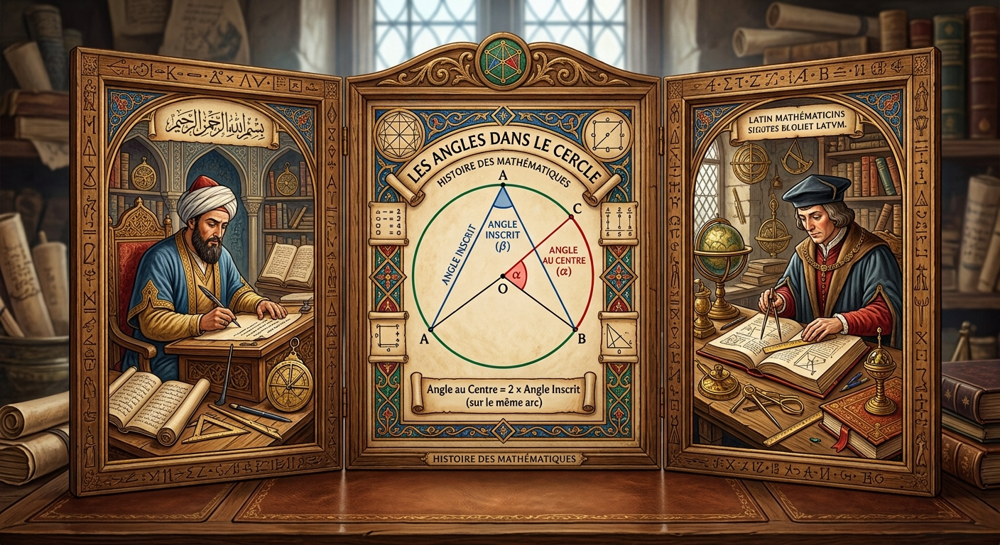
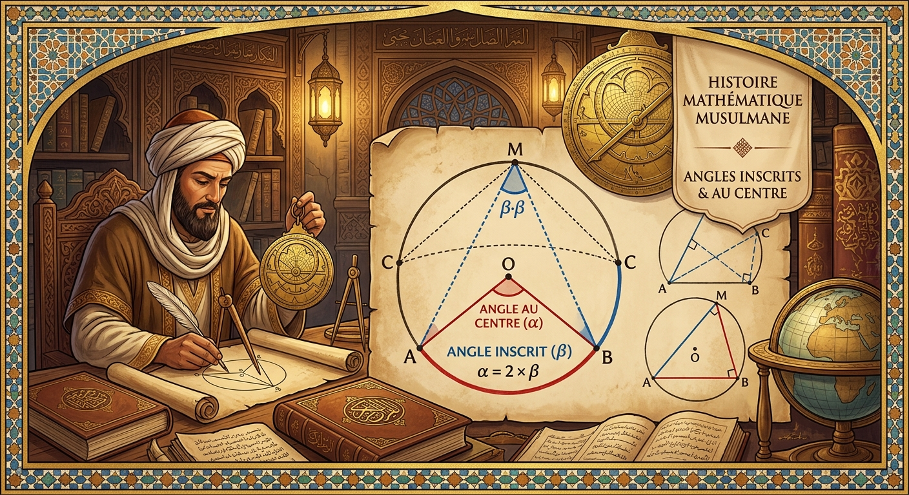
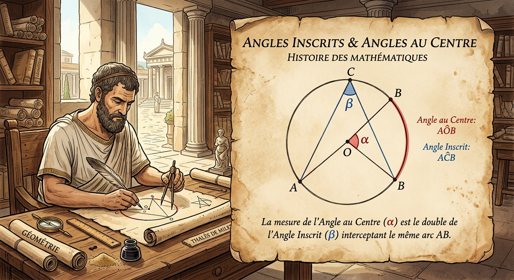
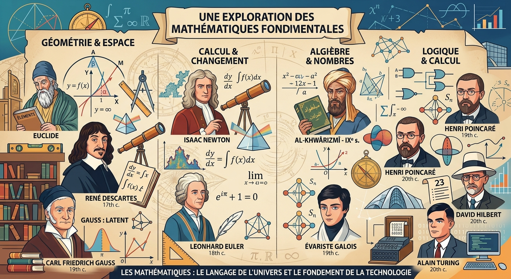

1. Définition
Dans un cercle, un angle inscrit est un angle dont le sommet est sur le cercle et dont les côtés coupent le cercle.

Dans un cercle, deux familles d'angles se répondent : l'angle inscrit, dont le sommet est sur le cercle, et l'angle au centre, dont le sommet est le centre. Un cours illustré, deux propriétés démontrées pas à pas, et 3 exercices avec correction détaillée à afficher en un clic.
2
définitions à maîtriser
2
propriétés démontrées
3
exercices corrigés
I. Cours
Le premier angle que l'on étudie dans un cercle est celui dont le sommet se trouve sur le cercle lui-même. On l'appelle l'angle inscrit.

Dans un cercle, un angle inscrit est un angle dont le sommet est sur le cercle et dont les côtés coupent le cercle.
On considère la figure ci-contre.
L'angle $\widehat{BAC}$ est appelé : angle inscrit.
On dit que l'angle inscrit $\widehat{BAC}$ intercepte l'arc $\overgroup{BC}$ (en bleu).
On considère la figure suivante telle que (AC) est une tangente au cercle $(\zeta)$ en $A$ :
L'angle $\widehat{BAC}$ est appelé aussi angle inscrit.
Il intercepte l'arc $\overgroup{AB}$ (en bleu).
Un des côtés de l'angle inscrit peut donc être une tangente au cercle plutôt qu'une corde.

II. Cours
Le second angle a, cette fois, son sommet au centre du cercle. C'est l'angle au centre — il va nous permettre de relier la mesure d'un angle inscrit à celle d'un arc.
Dans un cercle, un angle au centre est un angle dont le sommet est le centre du cercle.
On considère la figure ci-contre.
L'angle $\widehat{BOC}$ est appelé : angle au centre.
On dit que l'angle au centre $\widehat{BOC}$ intercepte l'arc $\overgroup{BC}$ (en bleu).
III. Cours
Deux propriétés relient entre eux les angles inscrits et les angles au centre lorsqu'ils interceptent le même arc. Elles sont la clé de tous les calculs d'angles dans un cercle.

Dans un cercle, si deux angles inscrits interceptent le même arc, alors ils ont la même mesure (c'est-à-dire isométriques).
Énoncé
On considère la figure suivante telle que : $\widehat{BAC}=60°$. Calculer la mesure de l'angle $\widehat{BDC}$, en justifiant la réponse.
Correction
On a d'après la figure :
$\widehat{BAC}$ et $\widehat{BDC}$ sont deux angles inscrits qui interceptent le même arc $\overgroup{BC}$.
Donc : $\widehat{BAC}=\widehat{BDC}$.
Et puisque $\widehat{BAC}=60°$, alors :
$\widehat{BDC}=60°$
Dans un cercle, si un angle inscrit et un angle au centre interceptent le même arc, alors la mesure de l'angle au centre est le double de celle de l'angle inscrit.
Énoncé
On considère la figure suivante telle que : $\widehat{BOC}=130°$. Calculer la mesure de l'angle $\widehat{BAC}$, en justifiant la réponse.
Correction
On a d'après la figure :
$\widehat{BAC}$ est un angle inscrit et $\widehat{BOC}$ est un angle au centre qui interceptent le même arc $\overgroup{BC}$.
Donc : $\widehat{BOC}=2\times\widehat{BAC}$.
D'où : $\widehat{BAC}=\dfrac{\widehat{BOC}}{2}$.
Et puisque $\widehat{BOC}=130°$, alors : $\widehat{BAC}=\dfrac{130°}{2}$.
$\widehat{BAC}=65°$
En résumé — pour un même arc intercepté :
c'est-à-dire : Angle inscrit = Angle au centre ÷ 2
IV. Entraînement
Cherchez chaque exercice au brouillon, puis cliquez sur « Voir la correction » pour vérifier votre réponse étape par étape.

On considère la figure suivante : les points $R$, $P$ et $M$ sont sur le cercle de centre $O$.
1)
Sachant que $\widehat{ROP}=65°$, déterminer la mesure de l'angle $\widehat{RMP}$.
2)
a) Colorier l'arc de cercle intercepté par l'angle inscrit $\widehat{RPM}$. b) Colorier l'angle au centre associé à l'angle inscrit $\widehat{RPM}$. c) Sachant que $\widehat{RPM}=105°$, déterminer, en justifiant, la mesure de l'angle au centre associé à l'angle inscrit $\widehat{RPM}$.
Correction
Angle au centre $\widehat{ROP}=65°$
Angle inscrit $\widehat{RMP}$ (question 1)
Arc en pointillé = grand arc $\overgroup{RM}$ (question 2)
1) Mesure de $\widehat{RMP}$
Dans le cercle, $\widehat{ROP}$ est l'angle au centre associé à l'angle inscrit $\widehat{RMP}$ et $\widehat{ROP}=65°$.
Or, dans un cercle, la mesure d'un angle inscrit est égale à la moitié de la mesure de l'angle au centre associé.
Donc : $\widehat{RMP}=\dfrac{\widehat{ROP}}{2}=\dfrac{65°}{2}=\boxed{32{,}5°}$
2) a) et b)
L'angle inscrit $\widehat{RPM}$ a son sommet en $P$, entre $R$ et $M$ : il intercepte donc l'arc $\overgroup{RM}$ qui ne contient pas $P$ — ici, c'est le grand arc $\overgroup{RM}$ (en pointillé bleu ci-dessus).
L'angle au centre associé doit intercepter ce même grand arc : c'est donc l'angle rentrant $\widehat{ROM}$ (la partie de l'angle en $O$ supérieure à 180°, « de l'autre côté » du petit angle $\widehat{ROM}$).
2) c) Mesure de l'angle rentrant $\widehat{ROM}$
Dans le cercle, l'angle rentrant $\widehat{ROM}$ est l'angle au centre associé à l'angle inscrit $\widehat{RPM}$ et $\widehat{RPM}=105°$.
Or, la mesure d'un angle inscrit est égale à la moitié de celle de l'angle au centre associé : $\widehat{RPM}=\dfrac{\widehat{ROM}}{2}$.
D'où : $\widehat{ROM}=2\times\widehat{RPM}=2\times105°=\boxed{210°}$
À retenir : un angle inscrit intercepte toujours l'arc qui ne contient pas son sommet. Si cet arc est le « grand » arc (plus de la moitié du cercle), l'angle au centre associé est un angle rentrant (supérieur à 180°).
On considère la figure ci-dessous dans laquelle :
1)
Démontrer que la mesure de l'angle $\widehat{GEF}$ est égale à celle de l'angle $\widehat{GDF}$. Quelle est cette mesure ? Justifier.
2)
Démontrer que la mesure de l'angle $\widehat{GEP}$ est égale à celle de l'angle $\widehat{GMP}$. Quelle est cette mesure ? Justifier.
3)
Démontrer que la mesure de l'angle $\widehat{GMF}$ est égale à celle de l'angle $\widehat{GNF}$. Calculer la mesure de $\widehat{GMF}$. Justifier.
Correction
1) $\widehat{GEF}$ et $\widehat{GDF}$
Dans le cercle, $\widehat{GEF}$ et $\widehat{GDF}$ sont deux angles inscrits interceptant le même arc $\overgroup{GF}$.
Or, dans un cercle, si deux angles inscrits interceptent le même arc, alors ils ont la même mesure.
Donc : $\widehat{GEF}=\widehat{GDF}$.
De plus, $\widehat{GIF}$ est l'angle au centre associé à ces deux angles inscrits, et $\widehat{GIF}=120°$.
Donc : $\widehat{GEF}=\widehat{GDF}=\dfrac{\widehat{GIF}}{2}=\dfrac{120°}{2}=\boxed{60°}$
2) $\widehat{GEP}$ et $\widehat{GMP}$
Les triangles $GEP$ et $GMP$ sont inscrits dans le cercle de diamètre $[GP]$.
Or, si un triangle est inscrit dans un cercle et si l'un de ses côtés est un diamètre de ce cercle, alors ce triangle est rectangle.
Donc $GEP$ et $GMP$ sont deux triangles rectangles, respectivement en $E$ et en $M$.
On en déduit que : $\widehat{GEP}=\widehat{GMP}=\boxed{90°}$
3) $\widehat{GMF}$ et $\widehat{GNF}$
Dans le cercle, $\widehat{GMF}$ et $\widehat{GNF}$ sont deux angles inscrits interceptant le grand arc $\overgroup{GF}$.
Or, si deux angles inscrits interceptent le même arc, alors ils ont la même mesure. Donc : $\widehat{GMF}=\widehat{GNF}$.
L'angle au centre associé à ce grand arc est l'angle $\widehat{GIF}$ « rentrant », c'est-à-dire $360°-120°=240°$.
Donc : $\widehat{GMF}=\widehat{GNF}=\dfrac{240°}{2}=\boxed{120°}$
Sur la figure ci-dessous, les points $E$, $F$, $G$ et $H$ sont sur le cercle $(\zeta)$ de centre $O$. Les droites $(FH)$ et $(EG)$ sont sécantes au point $I$.
$\widehat{HOG}=130°$ et $\widehat{EHF}=40°$
Calculer la mesure de chaque angle du triangle $FGI$ (en rouge sur la figure). Justifier chaque réponse.
Correction
Calcul de $\widehat{HFG}$ (= angle $\widehat{GFI}$ du triangle, car $I\in(FH)$)
Dans le cercle $(\zeta)$, $\widehat{HOG}$ est l'angle au centre associé à l'angle inscrit $\widehat{HFG}$ et $\widehat{HOG}=130°$.
Or, la mesure d'un angle inscrit est égale à la moitié de la mesure de l'angle au centre associé.
Donc : $\widehat{HFG}=\dfrac{\widehat{HOG}}{2}=\dfrac{130°}{2}=\boxed{65°}$
Calcul de $\widehat{EGF}$ (= angle $\widehat{FGI}$ du triangle, car $I\in(EG)$)
Dans le cercle $(\zeta)$, $\widehat{EGF}$ et $\widehat{EHF}$ sont deux angles inscrits interceptant le même arc $\overgroup{EF}$, et $\widehat{EHF}=40°$.
Or, si deux angles inscrits interceptent le même arc, alors ils ont la même mesure.
Donc : $\widehat{EGF}=\widehat{EHF}=\boxed{40°}$
Calcul de $\widehat{FIG}$
Dans le triangle $FIG$, la somme des angles vaut $180°$ :
$\widehat{FIG}+\widehat{IGF}+\widehat{GFI}=180°$
$\widehat{FIG}+40°+65°=180°$
$\widehat{FIG}+105°=180°$
Donc : $\widehat{FIG}=180°-105°=\boxed{75°}$